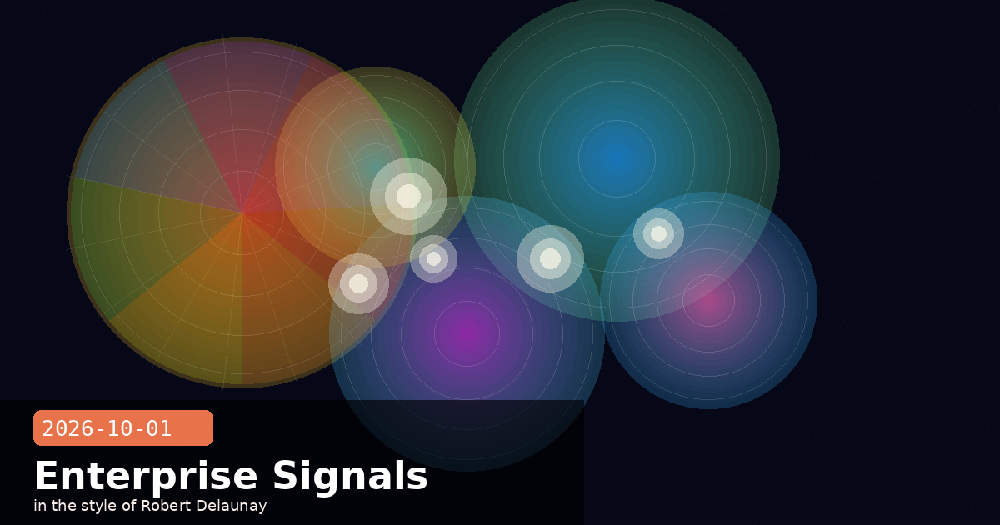

Barclays Scales Claude to 50% Dev Adoption; IPO Roadshow Mid-October

🧭 Barclays Expands Claude Deployment — 50% of Developers on Claude Code by Year-End
Barclays, one of Europe's largest banks, announced a major expansion of its Anthropic partnership on October 1, targeting 50% of its software developers on Claude Code by the end of 2026 and a majority by 2027. The bank's markets division is already running at scale: Claude processes approximately 120,000 client emails per day, classifying, summarising, and routing them to the relevant desk before a human trader reviews the output. The announcement positions Barclays as the most public large-bank adopter of Claude Code in the UK.
What Barclays is using Claude for
Client email triage: 120,000 emails per day through Claude — classification, priority scoring, and structured summary generation before human review. The pipeline runs on the Claude API with Anthropic's operator-level system prompts locking the model to financial-services safe output modes.
Legacy system modernisation: Engineering teams use Claude Code to accelerate re-platforming work, generating and reviewing code against proprietary Barclays style guides encoded in CLAUDE.md project files.
Software development acceleration: Claude Code is deployed across front-end, back-end, and infrastructure teams. Barclays reports a 35–40% reduction in time-to-first-draft for new features in teams that have adopted the tool fully.
Regulatory documentation: Claude assists in drafting compliance reports and regulatory submissions — with human review remaining mandatory at every stage under MiFID II obligations.
The enterprise pattern this signals
The Barclays announcement is notable not just for its scale but for the specificity of the numbers. Most enterprise AI partnerships disclosed in 2025–26 have been vague ("exploring Claude for various workflows"). Barclays is publishing measurable adoption targets and per-day throughput figures — a shift toward treating AI adoption as a reportable operational metric rather than a pilot programme. Expect other Tier 1 banks to respond with similar disclosures as pressure builds from analysts to quantify AI productivity claims.
What this means for developers building on Claude API
If you are building enterprise tooling on top of Claude, Barclays's architecture is worth studying. Their email pipeline uses a two-stage approach: a fast Haiku-class model for classification and routing, then a Sonnet-class model only for the subset of emails requiring structured summaries. Tiering model usage by task complexity keeps latency low and cost per email under the threshold where the ROI case holds even at banking email volumes. Build your own pipelines with the same tiering discipline before scaling.
🧭 Anthropic IPO Roadshow Confirmed for Mid-October — $2 Trillion Valuation Target, Nasdaq Listing in November
With the S-1 registration statement formally on EDGAR as of September 30, Anthropic's investment bankers have confirmed the roadshow timetable: investor meetings begin the week of October 16, the earliest permitted under the SEC's 15-day cooling-off rule. A Nasdaq listing is targeted for the week of November 10, with pricing set the prior evening. Lead underwriters Goldman Sachs, JPMorgan, and Morgan Stanley are guiding institutional investors toward a $2 trillion valuation — which, if achieved at that level, would be the largest IPO by market capitalisation in history, exceeding Saudi Aramco's $1.7 trillion debut in 2019.
Key signals from the roadshow setup
Valuation math: At $2T, the IPO would price Anthropic at roughly 320× trailing twelve-month revenue of $6.2B — a multiple that implies the market pricing in a very steep revenue acceleration. The 47% gross margin reported in the S-1 is the structural argument for the multiple: if Anthropic can scale revenue 10× while holding margins, the unit economics improve dramatically.
Float size: Anthropic is expected to sell 5–8% of shares in the offering, keeping float tight to reduce post-listing volatility and preserve the co-founder LLC's effective control. Even a 5% float at $2T implies raising $100 billion — the largest single IPO fundraise ever.
Lock-up: Early employees and Series A investors face 180-day lock-ups; co-founders and executive team face 365-day restrictions, per people familiar with the terms. The extended lock-up period for insiders is being marketed to institutional investors as evidence of long-term alignment.
Index inclusion: At $2T, Anthropic would immediately qualify for S&P 500 index inclusion under the new AI-company fast-track rules the SEC adopted in May 2026 — triggering automatic purchases from every passive fund that tracks the index.
What to watch before the November listing
The SEC typically issues its first round of comments on a new S-1 within 30 days of filing. For Anthropic, that means a comment letter is expected around October 30. Any material comment — particularly around the co-founder LLC governance structure or the existential-risk disclosures — could require an S-1 amendment, potentially pushing the listing window into late November. ClaudeBeat will flag any amendments as they appear on EDGAR.
🧭 'What Do You Want from AI?' Study Reopens — Anthropic Discloses Re-Identification Risk in Transparency Report
Anthropic has reopened its "What Do You Want from AI?" interview study, running through October 6, open to all Claude Free, Pro, and Max users. The study invites participants to speak candidly about what they hope for, fear, and expect from AI systems — and feeds directly into Anthropic's model values research and WEF policy contributions. The predecessor round from December 2025 drew 81,000 responses. This round adds one significant new feature: participants can opt to make their full interview transcript public.
The re-identification transparency report
Alongside the reopening, Anthropic published a transparency report disclosing a finding from the December 2025 round that was not previously made public: in a privacy audit conducted before publication, researchers found that 6 out of 125 sampled interview transcripts (4.8%) could be re-identified — meaning the participant could be linked to the transcript with high confidence — using only publicly available information and the transcript content, at a cost of under $0.50 per interview using an LLM-assisted search pipeline.
What Anthropic changed as a result
Redaction pipeline: All transcripts from the December round and this round now go through an automated redaction layer before any public release. The layer strips or generalises combinations of identifiers (location + occupation + relationship status) that individually seem innocuous but together narrow to a small population.
Re-identification audit threshold: Anthropic has set a policy that no transcript is published publicly unless it passes a re-identification audit at a false-positive rate below 1% — meaning fewer than 1 in 100 audited transcripts can be linked to a real person.
Participant disclosure: The consent flow now explicitly states the 4.8% finding and explains the redaction steps taken. Participants are given the option to receive their own redacted transcript for review before it is published.
Why developers building with Claude should care about this
The re-identification finding is a useful reminder that anonymisation is not a binary property. Any application that stores conversation transcripts — even with names removed — should run a combination-of-attributes analysis before treating them as anonymous. Fields that appear harmless in isolation (city, job title, family structure, hobby) can uniquely identify individuals when combined. Anthropic's disclosed cost of $0.50 per re-identification attempt should recalibrate your threat model: a determined actor with modest resources can re-identify at scale. Design for it.